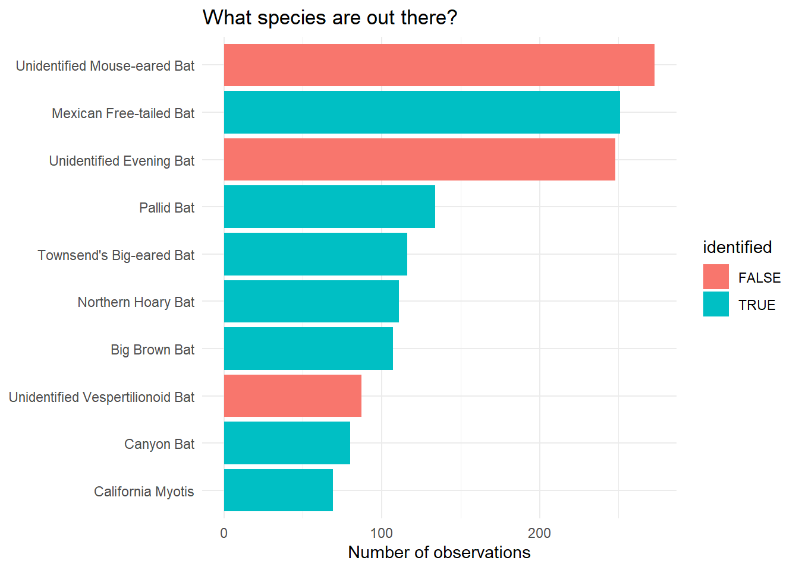
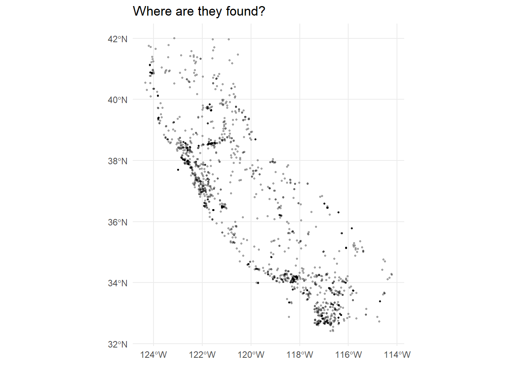
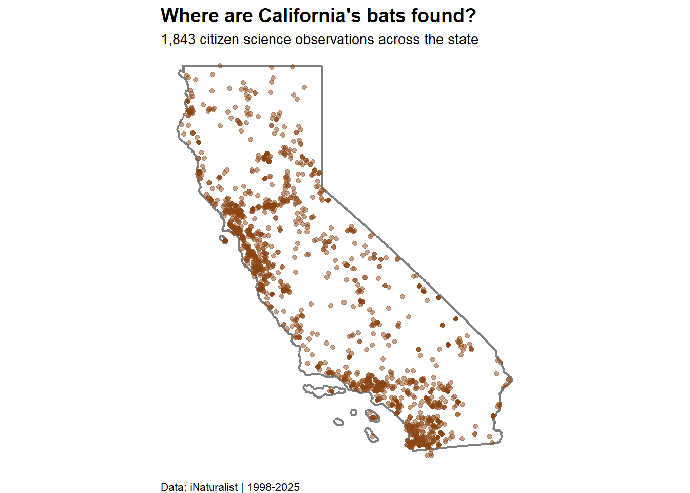
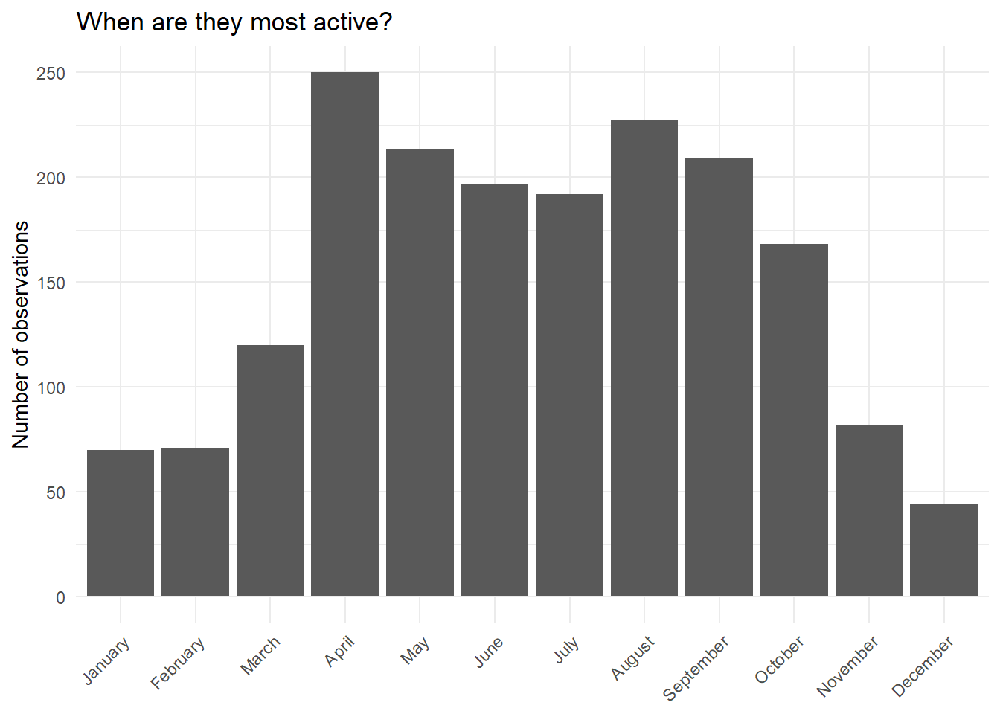

#.........................load libraries.........................
library(tidyverse)Warning: package 'ggplot2' was built under R version 4.5.2Warning: package 'stringr' was built under R version 4.5.2── Attaching core tidyverse packages ──────────────────────── tidyverse 2.0.0 ──
✔ dplyr 1.1.4 ✔ readr 2.1.5
✔ forcats 1.0.0 ✔ stringr 1.6.0
✔ ggplot2 4.0.1 ✔ tibble 3.3.0
✔ lubridate 1.9.4 ✔ tidyr 1.3.1
✔ purrr 1.1.0
── Conflicts ────────────────────────────────────────── tidyverse_conflicts() ──
✖ dplyr::filter() masks stats::filter()
✖ dplyr::lag() masks stats::lag()
ℹ Use the conflicted package (<http://conflicted.r-lib.org/>) to force all conflicts to become errorslibrary(here)here() starts at C:/Users/Donaji/Documents/MEDS/EDS240-DataViz/eds240-infographiclibrary(lubridate)
library(sf)Linking to GEOS 3.13.1, GDAL 3.11.0, PROJ 9.6.0; sf_use_s2() is TRUE#..........................import data...........................
calbats <- read_csv(here("data", "observations-675568.csv"))Rows: 1861 Columns: 40
── Column specification ────────────────────────────────────────────────────────
Delimiter: ","
chr (24): uuid, observed_on_string, time_observed_at, time_zone, user_login...
dbl (10): id, user_id, num_identification_agreements, num_identification_di...
lgl (5): captive_cultivated, private_place_guess, private_latitude, privat...
date (1): observed_on
ℹ Use `spec()` to retrieve the full column specification for this data.
ℹ Specify the column types or set `show_col_types = FALSE` to quiet this message.# simple clean data for exploration
bats_clean <- calbats %>%
filter(
captive_cultivated == FALSE,
# remove NAs
!is.na(latitude),
!is.na(longitude),
!is.na(observed_on)
) %>%
mutate(
date = ymd(observed_on),
year = year(date),
month = month(date, label = TRUE, abbr = FALSE),
# Relabel entries to reduce diversity count inflation (not all species have common names)
common_name = case_when(
scientific_name == "Myotis" ~ "Unidentified Mouse-eared Bat",
scientific_name == "Vespertilionidae" ~ "Unidentified Evening Bat",
scientific_name == "Vespertilionoidea"~ "Unidentified Vespertilionoid Bat",
scientific_name == "Chiroptera" ~ "Unidentified Bat",
TRUE ~ common_name # Keep all other common names as-is
))
# verify relabling
bats_clean %>%
filter(str_detect(common_name, "Unidentified")) %>%
count(common_name)# A tibble: 4 × 2
common_name n
<chr> <int>
1 Unidentified Bat 27
2 Unidentified Evening Bat 248
3 Unidentified Mouse-eared Bat 273
4 Unidentified Vespertilionoid Bat 87# Top 10 by observation count
bats_clean %>%
count(common_name, sort = TRUE) %>%
print(n = 10)# A tibble: 37 × 2
common_name n
<chr> <int>
1 Unidentified Mouse-eared Bat 273
2 Mexican Free-tailed Bat 251
3 Unidentified Evening Bat 248
4 Pallid Bat 134
5 Townsend's Big-eared Bat 116
6 Northern Hoary Bat 111
7 Big Brown Bat 107
8 Unidentified Vespertilionoid Bat 87
9 Canyon Bat 80
10 California Myotis 69
# ℹ 27 more rows# Percentage identified to species level
identified <- bats_clean %>%
filter(!str_detect(common_name, "Unidentified")) %>%
nrow()
identified / nrow(bats_clean) * 100 # Percentage[1] 64.40586# Total unique observers
length(unique(bats_clean$user_login))[1] 975# Year range
range(bats_clean$year, na.rm = TRUE)[1] 1998 2025# Prepare data
top_species <- bats_clean %>%
count(common_name, sort = TRUE) %>%
slice_max(n, n = 10) %>%
mutate(
identified = !str_detect(common_name, "Unidentified"),
common_name = fct_reorder(common_name, n)
)
# Plot 1
ggplot(top_species, aes(x = n, y = common_name, fill = identified)) +
geom_col() +
labs(
title = "What species are out there?",
x = "Number of observations",
y = NULL
) +
theme_minimal()
# Plot 2
# Convert to spatial object
bats_sf <- st_as_sf(bats_clean,
coords = c("longitude", "latitude"),
crs = 4326)
# Basic map
ggplot(bats_sf) +
geom_sf(alpha = 0.3, size = 0.5) +
labs(title = "Where are they found?") +
theme_minimal()
# Map with California boundaries
library(tigris)Warning: package 'tigris' was built under R version 4.5.2To enable caching of data, set `options(tigris_use_cache = TRUE)`
in your R script or .Rprofile.options(tigris_use_cache = TRUE)
ca <- states() %>% filter(NAME == "California")Retrieving data for the year 2024ggplot() +
geom_sf(data = ca, fill = NA, color = "gray50", linewidth = 0.8) +
geom_sf(data = bats_sf, color = "#8B4513", alpha = 0.5, size = 1.5) +
labs(
title = "Where are California's bats found?",
subtitle = "1,843 citizen science observations across the state",
caption = "Data: iNaturalist | 1998-2025"
) +
theme_void() +
theme(
plot.title = element_text(size = 14, face = "bold"),
plot.subtitle = element_text(size = 10),
plot.caption = element_text(size = 8, hjust = 0)
)
# Monthly pattern
monthly <- bats_clean %>%
count(month) %>%
mutate(month = factor(month, levels = month.name))
ggplot(monthly, aes(x = month, y = n)) +
geom_col() +
labs(
title = "When are they most active?",
x = NULL,
y = "Number of observations"
) +
theme_minimal() +
theme(axis.text.x = element_text(angle = 45, hjust = 1))